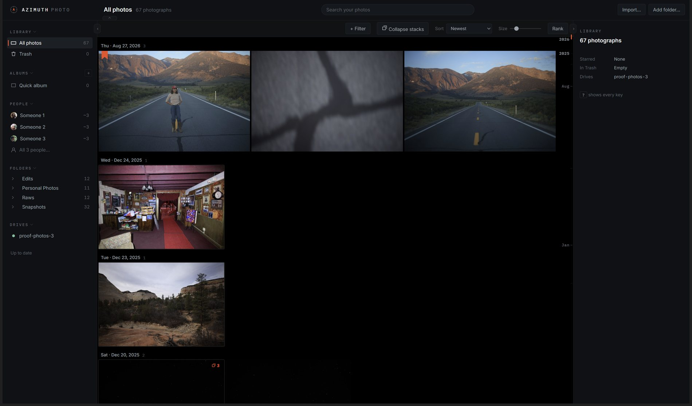
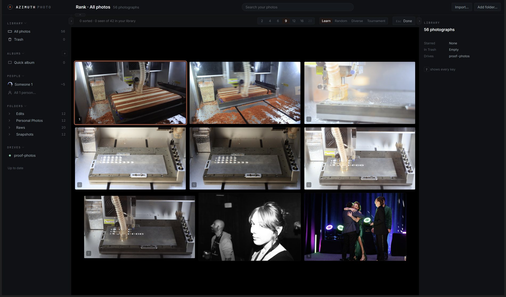
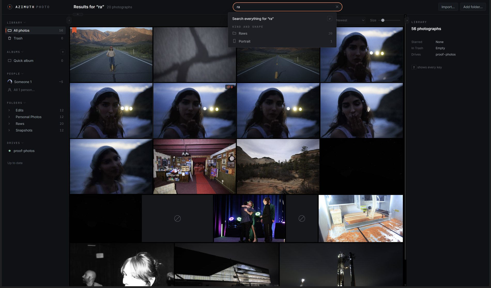
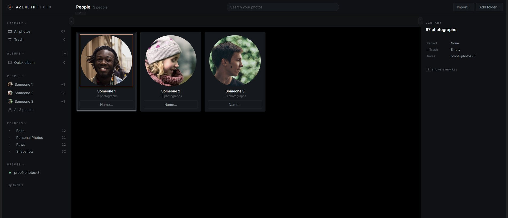
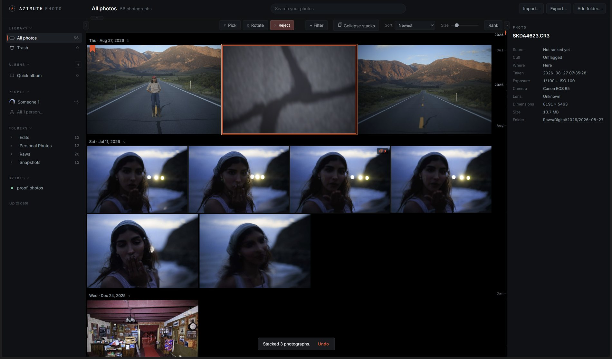
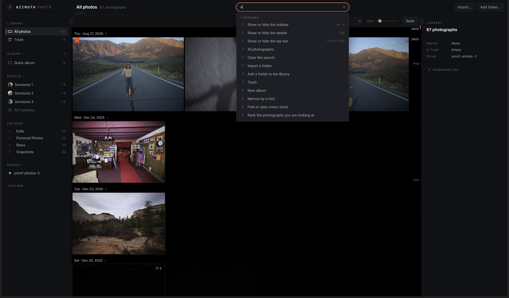

1,491
commits in July 2026, the peak month
Azimuth Photo is a desktop photo library for my own archive of about 150,000 photographs. I built most of it by directing AI models. This log covers three years of that work, including the mistakes. The code grew to 182,688 lines and was then cut back hard. The background queue stopped three times in two days. The archive drive had never been added to the catalog. Each chapter describes one part of the history, with the measurements from the commits. The interactive panels run the real algorithms.
Each bar is one month of commits. Each dot is a chapter. Hover over a dot to see its title, and click it to go there.
The lessons from all four acts are listed at the end, under Lessons.
Star ratings are hard to apply consistently across thousands of photos. Choosing the better of two photos is easy.
The first commit is a 228-line Python script called PhotoRanker. It opens a Tkinter window and shows two photos side by side. You click the better one. It updates a chess-style Elo rating for both photos, then shows the next pair.
A 1 to 5 star scale is hard to keep consistent. After a few shoots it is unclear whether a given sunset is a 4 or a 5. Elo avoids that question. Each click is one small comparison, and thousands of them produce one overall order. The script also pairs the current top ten against each other more often, so the leaders get tested the most.

def update_elo_rank(winner_elo, loser_elo, K): expected_winner = 1 / (1 + 10 ** ((loser_elo - winner_elo) / 400)) winner_elo += K * (1 - expected_winner) loser_elo += K * (expected_winner - 1) return winner_elo, loser_elo # adaptive K: swing hard when ratings are close, gently when far apart K = 32 if abs(winner_elo - loser_elo) < 100 else 16
Those two lines are the adaptive K-factor. The same rule is still in the app today. Everything else from 2023 was replaced.
This is the real update rule, running on a few of my photos:
"Propagated" shows an idea from Chapter 03: when you pick a winner, photos that look similar to it should move too. Here it is simulated by grid position. In the real app it uses cosine similarity between image embeddings.
After that the project mostly stopped. There was one commit in September 2023 and three in August 2024 (a blacklist and controller support), then eighteen months with no commits. The idea worked, but a desktop Tkinter script was not a good base to grow from.
The project restarted as a web app. The idea stayed the same.
In February 2026 the project restarts as a web app in two commits. The Tkinter window becomes a FastAPI server and a dark HTML page. The more important change is how comparisons are made.
Instead of two photos at a time, there is now a mosaic: a grid of candidates. You pick the best one, and all the others lose a little rating. Each click gives more information and is less tiring. The Elo math is the same.


In one day the app learned to search photos by what they show, and it got a new name.
April 21 is the most important day in the history. The commits that day, in order:
CLIP active learning, a unified bottom bar, an AI panel with effective-Elo pairing, a Library page with a justified grid and AI search, the Qwen3-VL-Embedding-8B model for search, the rename PhotoRanker to photoArchive, a lightbox, find-similar, duplicate detection, EXIF, k-means auto-collections, and finally Qwen3-VL-2B-int4 "to fit the GPU alongside other apps."
The main change: the library no longer needs typed tags. Embeddings turn each photo into a vector. With vectors you can search for "golden hour over water" in plain language, find photos similar to one you like, and group a shoot automatically, all without keywords.

The 8-billion-parameter embedding model was chosen at 10am and replaced that evening by a 2-billion-parameter int4 version, because it had to share one 8GB GPU with other AI models I was running. That limit stayed for the rest of the project: the app runs on one ordinary machine. Much of the engineering in this log is about fitting into 8GB of video memory.
Four days of speed work set a rule the app still follows: measure first, and never raise a time limit to hide a slow feature.
With search in place, the next four days were spent on speed. Most of the gains came from the same change: stop reading from the slow disk, and answer from memory instead.
The biggest gain was thumbnails, 30 to 50 times faster. Every thumbnail request was calling os.stat() on a spinning hard drive and doing a SQLite lookup under a lock, even for images already on the SSD. The fix was to build a (size, image_id) → path dictionary once at startup and never touch the database on that path again.
# In-memory index: (size, image_id) -> disk path. Built once, updated on writes. _disk_path_index: dict[tuple[str, int], str] = {} def fast_disk_read(size: str, image_id: int) -> bytes | None: """Fast path: SSD read via in-memory index. No SQLite, no locks, no HDD stat.""" if not _disk_index_built: _build_disk_path_index() path = _disk_path_index.get((size, image_id)) if path is None: return None with open(path, "rb") as f: return f.read()
The same work improved Elo propagation. When you pick a winner, its nearest neighbours by embedding also move a little, so a 20,000-photo archive does not need every pair compared. The change falls off with the cube of similarity: a 0.99-similar photo gets 89% of the change, and a 0.75 match gets almost none. That made it cheap to raise the neighbour count to 100.
def _nonlinear_weight(similarity: float) -> float: """Cubic remap so near-identical images get strong propagation, barely-qualifying ones get almost none. linear: 0.75→0.75 0.90→0.90 0.99→0.99 cubic: 0.75→0.00 0.90→0.22 0.99→0.89 """ t = (similarity - SIMILARITY_THRESHOLD) / (1.0 - SIMILARITY_THRESHOLD) return t * t * t # cubic
…good engineering to make this app the fastest photo app ever made.
This chapter has no new features, but the later ones depend on it.
Over one weekend about 130 commits landed with names like refactor: drain compare route facades. The single app.py was split into feature modules. The thumbnail cache became its own package. Every route and controller (loupe, mosaic, date scrubber, pregeneration) was moved into its own place.
It was slow, repetitive work. A RAW editor could not have been added to a ten-thousand-line file, so the later chapters depend on this weekend.
The plan was written down: the phone app works like Google Photos, and the desktop app works like Lightroom Classic. One library, plus a native Android app.
By summer the plan was clear. On the phone, the app should feel like Google Photos: easy scrolling, one hand. On the desktop, it should feel like Lightroom Classic: dense, keyboard-driven. In June a native Kotlin and Compose Android client started. In early July the desktop /d and mobile /m pages were redesigned together, with real writes, stacks, a safe trash, share links and smart collections.


Search version 2 added a caption model to describe each photo in text. Getting a 4-bit 7B vision-language model to load next to a voice program on one 8GB card took many commits: placing the whole model on the GPU, capping input images at 1280px ("uncapped previews demand >9GiB of attention memory"), and in the end switching to a 3B captioner.
The app went from managing photos to editing them, with the goal of matching Lightroom, darktable and Affinity feature by feature.
In three days a full RAW editor was added: a live WebGL2 pipeline with panels in Lightroom's order, a tone curve, HSL, a clipping histogram, crop, masking and history. It also had its own RAW decoder, its own colour science, and a film emulation engine that models the chemistry of film.

Every editing operation exists twice: once in NumPy, which produces the exported file, and once in GLSL, which draws the live preview. If they disagree, an edit looks one way on screen and exports another way. To prevent that, both versions read one shared table of constants, and a test checks that they match within 0.4 of 255 on every pixel, across 53 operations.
TINT_UV_SCALE = 3000.0 LUMA_RED = 0.2126; LUMA_GREEN = 0.7152; LUMA_BLUE = 0.0722 TONE_GAMMA = 2.2 # ... 50+ more named constants ... # PARITY_TABLE auto-collects every uppercase constant, so no value can # silently drift out of the GL↔numpy contract. PARITY_TABLE = { name: value for name, value in tuple(globals().items()) if name.isupper() and name != "PARITY_TABLE" }
Move the exposure slider below. The left canvas is the "GL" path and the right is the "numpy" path. The largest per-pixel difference stays at zero:
film.py is a film emulation engine that models the physical process. It is not a LUT or a colour grade. It models spectral exposure of each layer, halation, H&D characteristic curves, DIR coupler inhibition, and grain per layer. The red glow around bright lights on CineStill 800T is not painted on. It comes from the model: bright light reflects off the film base and back into the red-sensitive layer.
# halation: bright scene light bounces off the base into the red layer hal = t["halation"] amount = hal["amount"] * halation_scale if amount > 0.0: luma = rgb @ np.float32([0.2126, 0.7152, 0.0722]) excess = np.maximum(luma - hal["threshold"], 0.0) glow = _gaussian_blur(excess, sigma) layer[..., 0] += amount * glow # red bleed layer[..., 1] += amount * hal["green_fraction"] * glow # a touch of green
The panel below runs that algorithm on a synthetic night scene. It finds the bright spots, blurs them, and adds them back into the red channel. Turn halation up to see the glow on the lights:
Eight film stocks were set from their datasheets, then tuned against 53 real lab scans (Portra 400, Gold 200, Fuji 400, HP5). The halation radius was measured from the red-minus-blue falloff around lights in my own scanned negatives.
LibRaw cannot open Lightroom's lossy DNG files (JPEG XL, DNG 1.7). So the editor got its own decoder. It reads the LinearRaw image data directly and applies the DNG colour pipeline by hand: black and white levels, AsShotNeutral white balance, ForwardMatrix to XYZ, a Bradford-adapted matrix to linear sRGB, and BaselineExposure. A 2048px image decodes in 0.4 seconds, and the output was calibrated against my own Lightroom exports.

Every number here comes from a commit message. No time limit was raised to hide a slower result.
The library moved off a single machine: a laptop for travel, a server at home, and a phone, all sharing one catalog.
The phone and desktop apps from Chapter 05 needed to share one library. So the app gained a satellite and hub design: a copy of the catalog on the laptop, thumbnails in tiers, prefetching, and an operation log that syncs later instead of a request that waits. The rule was that the laptop never waits on the server. You cull on a plane, and it syncs when you land. Location backfill, a Google Timeline importer and keyword and IPTC support were added in the same week.


photoArchive got a real name, an installer and a website. It became something other people could run.
photoArchive became Azimuth Photo. The new name went on the wordmark, the web app manifest, the Android launcher and the desktop shell, and bundle IDs moved to app.azimuthphoto.*. Internal names, paths and database names were left alone so work in progress would not break. A Docker image, a compose file, an Unraid template and an INSTALL.md made it installable on a NAS. An Android client with a timeline, auto-backup and free-up-space shipped the same week.
The name Azimuth was my girlfriend's idea. An azimuth is the compass bearing to a point on the horizon, which suits a tool for finding your way through a large photo archive.
Commit the phone client source, it was untracked on every machine. Git is the backup.
The most serious bugs in the history. Each one was real. Most were caught in review; some reached the live app.
The phone deleted a local photo once the hub said it was backed up. The backup list counted trashed, missing and mirror rows as backed up, so the feature could delete a photo the hub did not have. The fix requires proof on disk: the original file present at the expected size.
A nightly 04:00 backup job used the same temporary file names in every instance. Two instances collided and left the server with no complete backups. Fixed with temporary names per process, a cleanup of leftovers, and a weekly restore test against a real 150,000-photo backup.
The website publish hook was a shell command that the client could set. That allowed remote code execution. Fixed by making the hook server-side only and requiring owner login on every non-public route.
Scanning a source that was offline marked every photo as missing. A check now refuses to let an empty scan clear the catalog.
The 4-bit 7B vision model crashed in its CPU-offload path with this version of transformers and bitsandbytes. The fix was to place the whole model on the GPU so that running out of memory could be recovered from, and to switch to a 3B model permanently.
For this stretch, the app was built by several AI models at once, each with its own area of work, checking each other.
The first twenty days of July have 1,226 commits, three quarters of the whole project up to then. They follow a set structure: a written charter for work lanes, roles named "CEO / CTO / managers / subagents", and hundreds of merges from named branches such as qfix-workers, ux2-perf, errhonesty and dt-gfilter. I directed several AI models, each working in its own lane, with one fixed rule: a different model reviews every change, never the one that wrote it.
Owns the plan, the specs, the naming and the final review of each change. Decides what ships. Does not trust a model's own summary of its work.
Coding lanes that take a detailed spec and return a branch. They must prove their work with a passing check.
Reviewers run on every merge. They are often wrong, so every finding is checked before it counts.
A different model tries to show that each change is broken. This caught five real regressions in one night.
The main theme of this stretch was error honesty: the app must not misreport its own state. A success message appears only after the write is saved. Loading, empty and "preparing" states say what is really happening. The rule was "Photos exist on screen immediately, and it is never a void." Dozens of qfix merges enforced this, repeated until audits found nothing new.
AI models will build almost anything you specify. They will not tell you that you should not have specified it.
So my job changed from writing code to deciding: what to build, what to refuse, what to delete, and when a month of work needs to be removed.

The models were good at producing software. On their own, they did not check whether it was the right software.
Every lane finished its tasks. Every merge was reviewed. The tests passed. But 24% of the 2,203 commit subjects were repairs (fixes, hotfixes, regressions), and simple changes were taking days. It took me a while to see that those were the same problem.
In August I wrote down one sentence that changed the plan.
“Azimuth does not work well and nobody uses it daily.”
Before deleting anything, I measured one thing: of everything the app stores, how much could not be recreated?
I measured the live catalog. 2.4 GB across 84 tables, and 41 of those tables were empty. They had been built, connected and tested, and never held a row.
Then the main question. In the 43 tables that did hold data, how much was a decision a person made: a keep, a star, an edit, a name? Everything else was computed from the photos and could be computed again.
| develop settings | 79,487 |
| stars | 6,165 |
| comparison pairs | 2,532 |
| develop presets | 994 |
| quality marks | 89 |
| keywords | 77 |
| flags | 32 |
| trashings | 2 |
| everything you ever decided | ≈ 89,378 |
The irreplaceable part of Azimuth fits in one append-only table, and it is 0.06% of the rows in the catalog.
That number changed how I saw the previous two years. The extra tables were not protecting anything important. They were bookkeeping: backlogs of work still to do, cursors that remembered progress, tables recording what each disk held, and more tables keeping those in agreement. Stored data that you do not need still has a cost, because it has to be kept consistent.
It also meant that the smaller design was the safer one.
This was a planned set of deletions with an order and a running count, to make the code much simpler.
I want the codebase to be 5% the size it currently is.
The reason: a codebase is something you and your tools have to find your way around. Every unused subsystem makes every later change slower and harder to understand.
The deletions went in waves, each one passing its tests, with git history keeping the old code:
Deleted. It cached URLs with version stamps, and every release changed every stamp. When the cache missed, it answered with a fake 504 Offline, including for the app's own startup files. A working build could show "0 photos."
Publish, share, shared, publishing: four overlapping systems for giving someone a photo.
The largest single deletion. The laptop and its drive are the system. The hub was built for a problem that no longer existed.
The code that ran the embedding models was removed. Cached query vectors still ranked results, and word search handled new queries.
The remaining tests covered real behaviour, so they stayed. Tests for deleted code had already gone with it. Only unused test scaffolding was removed.
app_factory was merged into app.py, so startup is one file read from top to bottom: create, mount, start.
I also kept a record of the deletions that were wrong. The commit subjects say so:
Client galleries and per-face correction were brought back, each with the limits they had been missing.
The deletion had looked for code with no callers, and behaviour tests have no callers.
The next commit was "Name the real cause: the drawer repaints every couple of seconds."
The stuck preview was caused by my own cleanup command.
Followed by: "There was no anomaly: the test runs 5.5s on a quiet machine." The wrong claim was withdrawn and kept in the record.
I think these matter more than the feature work. A record that includes the mistakes is easier to trust.
Each part of the app was rewritten on a new core, and its old code was deleted in the same commit. The lessons from the old version were kept. Its structure was not.
Since 99.94% of the catalog could be recomputed, a much smaller design was possible. Azimuth needs to know four things about a photo: what it is (its bytes), where its copies are, what you decided about it, and what was computed from it. Only the third cannot be recreated.
Those four facts became five tables and seven functions:
drives (id, uuid, root, is_record)
photos (id, hash, version_of, tail,
taste, <your decisions>,
<computed memo>)
copies (photo_id, drive_id, tail, seen_at)
decisions (subject, family, value, at)
cache (hash, kind, recipe, state,
path, value, bytes)
identify(file) what photo is this open(photo) give me the file put(file, drive) write it, then identify saw(photo, drive) record a copy (a hint) make(photo, kind) thumbnail / embedding decide(subject) append to the log sweep(drive) check what's on a drive
The most useful change in the rewrite fits in one line, and it explains years of bugs:
An absolute path is a drive plus a tail, and we stored them fused.
That one choice caused the drive probing, the hub_remote column, missing_at, the mass-missing safety check and rebind_moved_source. Five subsystems, all trying to recover a drive letter from a stored path string. They were careful, tested code, but they only existed because of how the path was stored.
Storing the tail and computing the full path fixed this. A renamed folder is now one row. A new drive letter is one row. The same photo on two disks is just two copy records. The five subsystems were deleted because nothing needed them.
The same approach worked for background work. The backlog tables, progress records and resume cursors all answered one question: what still needs doing? Asking that as a query, instead of storing the answer, reduces it to one anti-join: photos with no cache row of a given kind. There is nothing to resume and nothing to clean up when a worker stops.
# One anti-join replaces every backlog, ledger and cursor in the app. # Nothing to maintain, nothing to resume, nothing to reconcile. def owed(kind, recipe): return """ SELECT p.id FROM photos p LEFT JOIN cache c ON c.hash = p.hash AND c.kind = ? AND c.recipe = ? WHERE c.hash IS NULL """
The results, measured on the live 157,000-photo catalog. The grid got faster without a new cache: 86 indexes on one table went down to 5. Most of them were kept up to date for queries that no longer ran.
The worst bug of the rewrite was invisible. model/schema.sql was read by the tests and by nothing in the running app. The core tables had been created once, by hand, in the live database. On a catalog built from scratch through the normal startup path, drives, copies, decisions and cache were all missing. Every flag, star, rotation, thumbnail and sweep would have failed on a first install, which is the path the developer never takes.
The fix is one function. The rule that came from it: check a schema by building a fresh catalog, not by reading the file.
Each rule came from something that happened in this repository. They are ordered by how much code they removed.
Most large deletions started when I noticed a question was no longer being asked. thumbnails/ was 9,160 lines deciding when a thumbnail should be made and where it should be stored. Once "owed" became a query and the location became a file name, both questions went away, and so did the module. If nothing depends on a subsystem's answer any more, it can be deleted.
features/library/service.py was 1,661 lines, kept in use by one 8-line function that belonged in collections. The people code was removed once a search function stopped taking two injected functions from it. Cut the connections first, then the file can go.
"Clear cache" was shutil.rmtree(root) behind a marker file check. That check was all that stood between a settings typo and deleting someone's Documents folder. Deleting only the files the app had recorded writing made the check unnecessary. A safety check often means the operation is designed wrong.
"A recipe is never a timestamp" was a comment for years, and it was broken anyway. Now each kind of cached data declares its parameters, and canonical() rejects anything else. A comment can be ignored; an exception cannot.
decisions and cache replaced about ten tables. Elo, the folder tree, edit history, snapshots, status counts and tag lists are all computed now, so none of them can go out of sync. Every stored copy of a fact has to be kept consistent.
Three thumbnail workers coordinated by a governor became one loop plus a lane number. Lanes need no claims, leases or timeouts, because a worker that stops leaves nothing behind: the queue is a query.
Every real bug in the rewrite was found by running the app, and none by reading code: an empty grid behind a 200 response, a livelock that stopped thumbnails at 95, a middleware import that made every request fail, a missing table that would break every new install, and 75 sidecar files shown as photos. A passing import check only shows that imports work.
It would be easy to report "182,688 lines became 105,632." But line count is not the goal. It is easy to game, and optimising for it produces denser, worse code. When asked to pick a target, I declined: "idk the final number lets just try to write the most elegant code as possible."
So the goal is elegance, and line count is only a sign of it. The one check that tracks size works as a ratchet: measure the code today, allow the number only to go down, and require an explicit commit to raise it. That needs no target, and it makes any duplicate approach visible when it is written.
I had assumed that elegant code and polished code were the same thing. The research says they are not, and my own repository agrees.
A well-known example is from 1986. Jon Bentley set a word-frequency problem in his Programming Pearls column. Donald Knuth answered with a literate program in WEB/Pascal: more than ten pages, a custom data structure, fully documented. Doug McIlroy answered with six shell commands.
Knuth: more than 10 pages of literate WEB/Pascal, a custom data structure, fully documented
McIlroy: tr -cs A-Za-z ' ' | sort | uniq -c | sort -rn | sed 10q
McIlroy called Knuth's program an over-refined museum piece. His objection was about design, not length. He criticised Knuth for writing it "monolithically and from scratch" instead of combining tools that already existed, and he defended the pipeline for practical reasons: separate concerns, debugging one piece at a time, and reuse.
So the more carefully crafted program was the less elegant one. Elegance was not in the workmanship. It was in seeing that the problem could be solved with what already existed.
Dijkstra's definition, taken from a dictionary, is "ingeniously simple and effective." Both parts matter. A shorter program that does less is not more elegant.
Elegant code is code whose structure matches the structure of the problem. Being small is a result of that, not the aim.
From that definition, extra code builds up wherever the program's model of the problem differs from the real problem. Each wrapper, flag, safety check and status column covers one of those differences. So refactoring means correcting the model. The extra code can then be removed, because it only existed to cover the difference.
Other authors reach similar conclusions. Ousterhout defines complexity as dependencies plus obscurity, which makes readability part of the technical definition. Hickey's term is complecting, the braiding together of two things: many copies of a thing do not make a system complex, but interleaving does. Brooks splits difficulty into essential and accidental, and notes that a tenfold gain from tools would require accidental difficulty to be more than 90% of the work.
Hickey's other distinction is the one I use most. Simple is objective: you can see it in the code. Easy is relative to the person: familiar code feels simple even when it is not.
The common rule is that big files are bad. But research on software metrics gives a reason to doubt it. In a study of a large industrial C++ system with faults traced to real failures, the standard object-oriented metrics predicted faults only until class size was taken into account. After that, none of them held up. The authors set a test that any metric should pass:
Does the metric predict defects beyond what size predicts?
I ran that test here: 312 source files, 2,304 commits, tests excluded. The outcome is how many repair commits touch a file. The coupling measure is how many non-repair commits touch it, so the predictor and the outcome do not overlap.
| predictor | correlation with repairs | controlling for the other |
|---|---|---|
| coupling: how often unrelated work has to change the file | 0.71 | 0.56 · survives |
| size: how many lines it has | 0.55 | 0.19 · mostly disappears |
The clearest example is web/app.py. It is 120 lines and has the most repairs per line in the repository, because every part of the app is assembled there. By size it looks like the safest file. By coupling it is the riskiest, and coupling was right.
The practical result: instead of asking how big a file is, ask how often unrelated work has to change it. Git history on any repository can answer that without extra tools.
Richard Gabriel's Worse Is Better is often cited as proof that practical code beats elegant code. Reading it, the argument is about growing a system in small working steps, close to Gall's law: a complex system that works has usually grown from a simple system that worked. It is not an argument for low quality. Gabriel later argued the opposite side himself under a pseudonym, and at a panel a decade later he submitted papers for both positions and said he still could not decide.
The useful part is how he describes the two sides. Both value simplicity. They differ on where the simplicity goes: one side puts a simple interface first, the other puts a simple implementation first. That is a question of whose work you make easier, the caller's or the implementer's. Ousterhout's "deep module" is the first position written as a rule.
I looked for evidence that elegant code is more reliable and did not find it. Dijkstra connects reliability to simplicity but says there is no method for achieving simplicity. Parnas, in the founding paper on modular design, argues that modules make change easier but calls the claim about understanding a personal judgement without evidence. Gall's law is a saying, not a study. Gabriel gives an example where the elegant solution needed about a hundred pages of assembly, which made it very hard to get right.
So the link between elegance and reliability is widely believed and argued for, but not proven. The part most likely to be true is what my own numbers show: tangled code breaks more often.
Carmack is often quoted against small functions, but his reason is not speed or readability. It is state: moving code into a named function lets someone call it later to do a partial update, and many bugs come from the program's state differing from what the programmer expects. His 2014 follow-up says the real goal is controlling unexpected dependencies and changes, and inlining is only one weak way to do it. He also rates duplication as worse than the problems shared functions cause.
Sandi Metz says the opposite: duplication is cheaper than the wrong abstraction. Her reasoning: a requirement arrives that almost fits, someone adds a parameter and a condition instead of rethinking the abstraction, and after a few rounds it is full of special cases. People keep it because existing code looks necessary. Her fix is to copy the code back into every caller, delete what each caller does not need, and then design the abstraction again.
They are talking about different situations. Metz means creating an abstraction before you know the pattern. Carmack means copying logic whose pattern you already know.
A rule that fits both: allow duplication until the pattern is clear, then combine it once, and do not change an abstraction to fit a case it was not designed for.
Models write poor code mostly because of what we ask for and what we accept.
Every model I used could write good code. Most of the bad code I got was my fault: I asked for a task instead of a design, accepted the first thing that worked, and took its word that it was finished. First, here is what research has measured about AI-assisted development:
| measured effect of AI-assisted development | change |
|---|---|
| Duplicated code blocks (GitClear, 623M changes) | +81% |
| Copy/pasted lines | 9.4% → 15.7% |
| "Moved" lines, their measure of refactoring | ~21% → 3.8% |
| Defensive and error-hiding code | +47% |
| Maintenance of older code | −74% |
| Experienced devs on their own mature repos (METR RCT) | 19% slower |
Two things there changed how I work. The first is GitClear's explanation, which I agree with: the problem is how the tools are used, not the models. Assistants are used to produce as much code as possible, and that produces copying and rework. My own July matches that: 1,491 commits, and nearly a third of them were repairs.
The second is METR's finding that AI helps least in codebases with high standards and many unwritten requirements. In other words, AI helps least where the code is already good. As a codebase improves, the work shifts from writing to deciding, and the deciding has to come from you.
None of these are clever. Most of them just refuse the first answer that works.
“Add support for photos that live on a second drive.”
“Photos can live on a second drive. Before writing anything: what does the current model get wrong about where a photo lives? If a field is doing two jobs, say so.”
Why it works: the first prompt accepts my model of the problem and adds to it. The second asks whether the model is right. This exact exchange produced "a path is a drive plus a tail", which removed five subsystems.
“Fix the bug where thumbnails don't regenerate after an edit.”
“Thumbnails don't regenerate after an edit. Find the cause and tell me what it is before proposing a fix. Then: what does the fix make unnecessary?”
Why it works: the second half matters most. Asking what a change makes unnecessary, at the same time as making it, is how a codebase can gain features and get smaller.
“Review this diff.”
“Here is a diff. Find the case where it is wrong. Assume it is broken and show me how. Don't tell me what it does well.”
Why it works: a review request tends to get an agreeable answer. A request to prove the code broken has a different goal. Use a different model from the one that wrote the code, so it has no reasoning of its own to defend. One night of this found five real regressions.
“Implement the import pipeline.”
“Before any code: give me one sentence that states the shape of this, and a list of what that shape makes unnecessary.”
Why it works: the two best modules in this codebase both start with exactly that: one sentence describing the design, and a list of what it removes. "Owed is what should exist, minus what is cached" removed a 93,220-row backlog, six triggers, three ledgers, five cursor tables and seven schedulers. Asking for that first gets you a design instead of a large amount of code.
Enforce rules in code. "A recipe is never a timestamp" sat in a comment for a year and was broken anyway, by me and by every model that worked on it. It stopped being broken when it became a function that raises an error.
Do not keep retrying bad output. When something came back poor, my first reaction was to explain more and try again. That usually cost more than doing it myself, because the second attempt kept the design of the first. Now a weak result means I do that piece myself.
A model answers the question you ask. It does not tell you whether it was the right question.
So the work is asking better questions, then checking the answers by running the code.
“No bandaids, no stop gaps, no adapters … v1 was the rough draft, v2 is the product.”
The app had run on a web server for two years. When the screens were rebuilt on the new core, it was clear that nothing outside the laptop had ever connected to that server, so it was removed.
After Act II there was a small core with no screens on top of it. The old screens came with routes, a port, a login layer and session handling. All of that was for outside visitors, and there were none: every request came from the same laptop.
On 18 August the server was removed in 34 commits, each deleting what it replaced. What remains is one Python process that opens one native window showing one HTML document. The page talks to Python through one bridge object. There is no HTTP and no port, so there is nothing exposed to secure.
To track what was finished, I added a second ledger, REWRITE_LEDGER.md. It lists every code file, and every file starts as "Legacy". A file stops being Legacy only when an entry says it was rebuilt and tested. A check fails if any file is missing from the list, so old files could not remain unnoticed.

Two other changes came out of the same week. The thumbnail store had its own routes, a cache table, a cleanup worker and versioned URLs. Without a server, a thumbnail is just a file the window reads, so all of that became a file name. The background worker used to check for work on a timer. Now it waits until a sweep, an import or a decision creates work.
A few days earlier, a fix added a version number to thumbnail URLs so the grid would refresh. It only worked on the screens I had edited, because the same information was stored in three places. I asked: "now make sure this fix is elegant and not just a bandaid." The version number was removed, and each thumbnail's address became the photo's own hash. That became the rule for the rest of the rewrite.
Comparison ranking from 2023 was rebuilt first. Then stars were changed so that you never set them by hand.
Rank shows a set of photos and asks which is best. Each group in a set is shown at the same size, so no photo wins by being larger. Best is the order that results from these choices. There is no score table: each comparison is saved as a decision in the log, and the ranking is computed from the log and from how similar the photos are. The similarity part is why 310 judged photos could place 8,617 others.
Stars now come from the ranking. A photo's stars show where it falls in the ranking. Each extra star halves the set: one star is the top half of what you have judged, five stars the top 3%. A star can be earned against the whole library or within one shoot, and the info panel says which. The old judgements were carried over from the old catalog, which was opened read-only.


Search can find a photo three ways: by text (file name, folder, camera, date), by a set you named (an album or a label), or by meaning, using embeddings. Each way returns a list with its own kind of score, and a file-name match and a similarity score cannot be compared directly. So the lists are combined by position only: each photo gets 1/(60 + position) from every list it appears in. Turn a list off below: the results get worse, but there are still results.
Turn a list off and the results get worse but do not disappear. A photo near the top of two lists ranks above a photo at the top of only one list, because the positions add up.
def fuse(*lists, limit): """Reciprocal rank fusion. Ranks have no units, so nothing needs calibrating.""" score = {} for ranked in lists: for position, image_id in enumerate(ranked): score[image_id] = score.get(image_id, 0.0) + 1.0 / (RRF_K + position + 1) ordered = sorted(score.items(), key=lambda pair: -pair[1]) return [image_id for image_id, _ in ordered[:int(limit)]] def search(conn, query, *, space=None, query_vector=None, scope=EVERYTHING, limit=500, omit=frozenset()): # `scope` is the view being searched -- a folder, a collection, the chips -- # so searching inside a collection is this same function and not a second one. ranked = fuse( _lexical(conn, query, limit, scope) if query else [], _named(conn, query, limit, scope) if query else [], _semantic(conn, space, query_vector, limit, scope), limit=limit)
Collections were simplified the same week. What you see is always one scope. An album is a saved set of photos, and a smart album is a saved search. Both use the same filter chips, so "2024 · Canon R5 · starred · in Iceland" is the same scope whether you typed it, saved it or clicked it.
A design for organizing the library was drafted in one day from a study of eleven other apps. After I used it for an afternoon, half of it was removed, and the rest worked better.
The day started with a study of how Google Photos, Apple Photos, Lightroom, Capture One, Photo Mechanic, Excire, Peakto, PhotoPrism, Immich, Mylio and ACDSee organize a library. By the evening there was a working draft: suggested groups of similar photos, a shelf to hold the suggestions, seventy automatic tags, and a Keep button. I tried it on my real library and sent back a page of changes. This was the main one:
So lets say I search cat and theres 90 cats and 1 dog, I should be able to hit no on the dog and next time that keyword is used anywhere it will be smarter.
All the automatic suggestions were removed: the groups, the shelf, the tags and the Keep button. What stayed is one idea: a label is a word you teach. You search for it, mark the wrong results, and it improves from then on. Labels and smart albums turned out to be the same thing, so they use one formula: what the model predicts, plus what you added by hand, minus what you rejected.
This gave the app one consistent rule. Anything computed is a prediction and is shown with a tilde: Nightscapes ~74, a face that might be someone, a guess at where a shoot ends. Anything you say is a decision, saved permanently in the log, and it replaces the prediction. Ranking already worked this way.

People work the same way. The app finds faces and groups them, but it never decides who anyone is. A person is a name you give to a group of faces, and nothing else is stored about them. The same day, the app started using the same colours and compass logo as this website.
The goal was an editor as good as Lightroom's. After counting my real edits, measuring the result against Adobe, and trying it, I decided editing stays in Lightroom.
The request was an editor "nearly 1:1 with Lightroom Classic" that could open Lightroom's own edits. First I counted what that would require, by reading every edit file Lightroom had saved in my library:
580 edit files Lightroom had written
569 hold only a crop
11 hold full develop settings
0 masks. no local adjustments,
no healing, no cloning,
in any file
build the crop first: it is used 50 times more than anything else store edits in Lightroom's own setting names, so reading and writing them is a direct copy leave masks for later: none of the saved edits use them
The crop shipped first, then a full panel of sliders. The acceptance test compared its output with Adobe's on forty real DNG files: 0.0445 average difference in lightness, against a limit of 0.035. That did not pass, and the number was recorded in the design document. A few days later I looked at the panel, found it well short of Lightroom, and parked it. On 19 September I confirmed the decision: editing stays in Lightroom, and Azimuth is for browsing, searching, ranking, people and import.
The same weeks produced several features about the files themselves:
Bursts are not found by similarity. A burst is a set of frames taken at a steady interval, and it stays one burst when focus or exposure changes. f6340ef6
Import the phone's GPS track and every photo taken during it gets a location. Clocks are the catch: GPS uses UTC and the camera uses local time. 758ca1b8
An embedding cannot tell that a photo is two stops underexposed. So palette, tone, grain and sharpness are measured from the thumbnail and stored as separate numbers you can filter by. 8855c2f7
Rating, colour label and keywords are written into the sidecar file in Lightroom's format, so a keep in one app is a keep in the other. bbc9d99b
The commit message is one line: "The V1 application leaves the tree." Act II said the old interface would be kept. It was not.
On 12 September the whole product was: five tables, 16,286 lines of Python, and an interface of 7,835 lines of JavaScript and 1,246 lines of CSS, bundled into the one document the window opens. The Android client was removed the next day.
I had expected to keep the 39,000-line interface. Instead, each screen rebuilt on the new core needed about a fifth of its old code. Most of the old interface had converted data between formats that the new core does not use.
V1 could be deleted safely because of a tool added the same day: tests that run the real app off screen. The window is created 2,400 pixels to the left of every monitor, where it still renders, and is captured with a Windows call that works wherever the window is. A script clicks and types in it first, so each screenshot shows the app after a real sequence of key presses.
window = webview.create_window(
"Azimuth Photo proof",
url=edge.bundled_document().as_uri(),
js_api=product,
width=1900, height=1150, x=-2400, y=60, # beyond any screen, still rendered
)
# each --probe is JavaScript evaluated in the page, in order, with a gap
# so one may act (press S on a burst) and the next may read what happened;
# the capture follows the last.
user32.PrintWindow(hwnd, hdc, 2) # PW_RENDERFULLCONTENT: WebView2 included
Each script is a journey, one for each task a photographer does: cull with the keyboard, zoom in, name someone, find a photo from memory, judge a burst, make an album. After each round, I compare the screenshots with the previous round's. The Act III screenshots on this page came from these scripts.
With the deletions done, the work turned to small fixes. It is harder to check whether a small fix really worked, so each finding could only be closed in the commit that fixed it.
I asked for a findings ledger. Each entry says what the problem does to the user, where it is in the code, the fix, and how much it matters. An entry closes only in the commit that does the work: shipped, or rejected with a written reason. When the ledger is empty, a new audit adds more.
After four days it had 555 entries. 102 of them came from a second model that read each day's changes and tried to prove them broken. It found a focused button that blocked Enter on every screen, a day selection that kept pages in memory, and a queued pick that stayed after its set had finished. A normal review had marked all of these as done.
Counted from the ledger file on 12 September. A refutation is a second model reading the day's changes to find where they are broken.
Metadata took 16 s and stacks 4 s at 150,000 rows, all before the window appeared. Now these repairs run after the window appears, through one writer that saves only changed rows, and a rebuild with no changes writes nothing.
The ring was drawn on the cell, underneath its image. For one day every selected photo looked unselected. The next audit found it, and the ring now draws above the image.
My request during the round: nothing is stacked automatically. S on selected photos makes a stack, S on one photo stacks the burst around it, and Shift+S unstacks, all with Undo.
From a study of Notion, Linear, Superhuman, Raycast and Lightroom: a spinner inside a fast loop only adds noise. The loupe opens without animation. A message waits while the pointer is over it. Undoing a single flag works with Ctrl+Z without a message.
Found by the sixth-round persona audit: with the editor parked, the loupe was showing edits without the full pipeline behind them. It now labels them as previews.
From my own session: ties were broken toward the lowest rating, so Learn mode kept showing the worst photos in the library. Ties now go to the highest rating.


With deletions, you can see the change. With small fixes, it is hard to tell "fixed" from "fixed on the one screen I checked."
Requiring each entry to close in the commit that fixed it, with a number or a screenshot, kept hundreds of small fixes checkable.
“the UI is always paramount, and must be as snappy as possible, the thing I hate about LRC the most is how slow and laggy it is all the time.”
The GitHub account the project was on was flagged. The code moved to a new account in one commit, and the old history was uploaded next to it. The way the work was done also changed that day.
On 12 September the old account could no longer be used. The code went to a new repository as one commit containing 254 files. The 2,632 earlier commits were uploaded as a branch called legacy-main, so every commit hash in this log still opens on GitHub. The project has 3,046 commits in total.
That evening the work moved to cloud sessions. Each task ran in its own session, pushed its own branch and opened a pull request, and every pull request was checked on Linux and Windows. More than thirty pull requests were merged that evening. The development library became public-domain photos that can be built on any machine, with a large set of 6,105 real photos. The audits were split: a cheaper model looks for problems, and a stronger model checks and fixes them.
Another addition that night was a friction meter. The app records how long each action takes while I use it, and I can press a key to mark something that annoys me. From then on, my own use of the app produced measurements.
For weeks, several bugs said the archive was missing: no thumbnails while travelling, whole years not shown. They had one cause: the archive drive had never been added to the catalog.
The catalog the app opened contained one drive: the laptop's working drive, with about 7,600 photos. The archive, 3.2 TB on a USB disk, was only in an older catalog that the app no longer opened. Every "archive is missing" report came from that.
Adding the drive took a minute in the app's drive dialog. The sweep found 147,888 photos. But in the new design a photo's identity is a hash of all its bytes, and the old catalog's hashes were a different type that could not be reused. So every file on the 3.2 TB USB disk had to be read.
The next day I measured how fast the disk can be read. Every method gave about the same result:
The disk reads at about 35 MB/s no matter how it is read. One idea was to let only one lane read the archive at a time, so the disk head would move less. It was built, measured slower, and removed within the hour (0acbdf98, 173a5f31). The backup program reading the same disk made it about five times slower, and pausing it is my decision, not the app's.
This changed what counted as expensive. At 35 MB/s, identifying the whole archive would take about 25 hours. Each launch also scanned the archive's 1.5 million files before doing anything else: 57 minutes per launch. So during the backfill, the most expensive thing to do was restart the app.
The background work stopped three times in two days. Each time the cause was the order in which work was taken, and each fix was a different order. The fix that worked was to stop using one order for everything.
Background work is a query: each of four lanes asks what is owed and takes the first item. Each photo goes through the same steps: identify it (hash its bytes), read it (camera, lens, date), make its thumbnail, and make its vector for search. With 111,414 photos waiting, the order of the list matters a lot.
Order 1: newest photo first. Nothing was identified for five minutes while thumbnails kept being made. A photo's date is only known after it has been read, so every unread photo sorted after every dated photo that still needed anything. The sort key depended on work that had not happened yet. Fix: unknown dates sort first.
Order 2: unknown dates first. Now reading went quickly and everything after it stopped: 19,191 photos were waiting for vectors and faces, so more and more of the library could not be searched by meaning. Fix: sort by the file's own modified time, which every photo has from the start and which does not change.
Order 3: newest file first. In this library, every photo that was already identified had a newer file than every photo still waiting. So identified photos always came first, and nothing was identified all night while the vector backlog was worked through and the archive disk was half idle.
You can run the three orders below. This is a small model of the real queue:
Choose an order and press Run.
This is a model, not a recording: every job takes one tick. The first 96 squares are the working drive, already read and waiting only for a vector. The other 144 are the archive, not yet identified. A lane holds the first item on its list. If that item needs the disk or the card and it is busy, the lane waits.
The fix that worked was not a fourth order. Each kind of work has its own newest-first list, and the lanes take the kinds in turn (bd527252). No single order can let one kind of work block the others, and the disk and the card both stay busy.
Those two nights had two more problems. On 15 September the laptop went to sleep at 21:46 in the middle of a step. The step failed and left its database transaction open, keeping the write lock, so the other three lanes timed out every minute until morning. The database log file grew to 1.4 GB, and every read afterwards had to go through it. Now a failed step rolls back, and the log is trimmed at every checkpoint (287dc362, a4293d75). The next night the app crashed at 01:42 with memory corruption: four lanes had been running the search model and the face models at the same time. Loading the models was protected by a lock, but running them was not. Now it is.
If a queue is sorted by date, make sure the date exists before the work runs, not after. If several kinds of work share one queue, do not let one sort key decide between them. Three different keys each stopped some part of the work.
19 September had more commits than any other day in the project. At the end of it, I said it felt like we were getting nowhere. That was accurate, and the reason is useful.
Two review rounds had taken over the work. Findings were closed one at a time, each correctly and each with its commit: seventy-one numbered findings in one afternoon and evening. But using the app, the ranking mode still lagged. I sent two messages that evening:
The rank mode is laggy, it HAS to be instant, on click.
weve been working on this feature all day andseems like where are getting nowhere
The work was narrowed to the problem I could see. The slow part of a Guided ranking question was that each pick re-read who was in the library, which a pick never changes. Keeping that result took a question from 1.37 s to 33 ms (b0659bb6). The ranking work was given to a different model to finish, with only one model writing each feature. The same night the app got a changelog in its menu and a blue "Restart to update" button. The next morning it got a menu bar: File, Edit, Library, Photo, View, Help.
The restart button was added because of something measured that day: my shortcut runs the source code directly. There is no install step, so every commit is what my next launch runs. That afternoon a worker bug that used 100% CPU was in the code for 22 minutes, and I happened not to launch during that time. After that, worker changes were tested on a copy of my library before being committed.
A day spent closing review findings looks like no progress to the person using the app, because nothing they can do has changed. Commit count measures activity, not progress.
Start with something the user can do that they could not do before. Keep changes small. Make the first improvement something that is visible at the next launch.
I asked for ranking to feel instant and allowed the live app to be used for measurement overnight. The biggest waste found was the same query running four times.
My message that night: "keep working until its all perfected and we squeeze every last drop of performance out of the hardware." All the tools were read-only: the app's own records of how long each action took, a profiler that samples without stopping the app, and the Windows disk and CPU counters. Anything that needed a query or a render ran on a copy of the catalog.
The records showed the four lanes spending 22 of every 57 lane-minutes asking what was owed: the same whole-library query, run once per lane. That became one shared list, queried once, with each item taken by one lane (ee8f4a21). Also, one lock covered every read of an original file, so the fast internal drive waited behind the slow USB drive. Now the lock covers only the archive (14656f13). Measured over the same fifteen-minute periods of the backfill:
After that, the USB disk was the limit again. During the night it read at 34.7 MB/s and was 90% busy, while the internal drive was 99% idle and the processor was 13% loaded. The code was no longer the limit. At 03:35 Windows Update restarted the laptop, closing the app and the session. The next launch continued from where the night had stopped.
Two drives held different versions of the same photos, and a camera's file counter had restarted. Deciding which file is which photo turned out to be harder than hashing it.
The first problem: 191 files were on both drives, and 98 of them had different sizes, because Lightroom had written metadata into the working copies. Each drive's sweep saw the other drive's version, re-read the whole file, treated it as a new photo, and moved every decision to it. The next sweep moved them back. 3,103 identity changes since 20 September, and 19.3 GB re-read each time. My decision: "newer file wins, and we can update the data of the old version." The backup now replaces the older copy and moves it into the drive's own trash folder (74d96f1e).
The second problem was file names. Of 83,757 DNG files, 13,332 have the same name as a CR3 or CR2 raw file. "Same name, same photo" is often wrong: a camera numbers files from 0001 to 9999 and then starts again, so SKDA5202.CR3 from 2026 and SKDA5202.dng from 2024 are different photos. The rule that works also checks the capture time to the second and the camera. Try both rules:
Choose a rule to see what it would link.
The last change before this update: every launch ran a repair that read the edit log for about 36,000 photos one at a time, with one database write each. The database driver starts a write transaction before each write, so the repair held the write lock for about half a minute on every launch, even when nothing had changed. Now it reads the log once, writes only rows that differ, and starts no transaction when nothing has changed (e1204429).
The process uses a few plain files and one rule. They are all in the repository, so you can use the same process on your own project.
Vision.md holds what I asked for in my own words, dated, one line per request. Requests are not rewritten as tickets and not deleted when done. When two requests contradict each other, work stops until I decide which one applies. A model cannot tell you that the question was wrong, but a list of the questions lets you check.
"This should be expressible in what already exists. If it isn't, tell me which piece is missing." That gets a design. Asking for a task gets extra code added on. A path is a drive plus a tail and a stack is a decision both came from this question.
Each task runs in its own session with its own branch and pull request. A cheaper model looks for problems, and a stronger model checks and fixes them. Audits run in parallel, but fixes do not, because parallel changes to the same design do not fit together. When a feature stalls with one model, it moves to another model, still with one writer.
It is asked to prove the change is broken, not to review it. 102 of the first 555 findings came from this. The model that wrote a change never approves it.
The app records how long each action takes while I use it, and I can press a key to mark anything that annoys me. The next round of work starts from that record, and the live app is profiled while it runs.
A finding closes only in the commit that fixes it, with a benchmark number or a screenshot. "All tests pass" is a claim, and claims are re-run. Automated checks count things that only increase when code is added, so a regression shows up as a number going up.
The files: Vision.md for requests, Findings.md for problems found and what happened to them, WorkQueue.md for who does what next, AGENTS.md for how AI agents work in the repository, and the checks and journey scripts under scripts/.
The screenshots are not mockups. For each period, the code from that time was checked out and run.
For each milestone commit, a small script checks the commit out into a separate git worktree with its own port and database, scans a fixed set of 64 of my photos, builds the thumbnails, and uses a headless browser to take the screenshots. The real library is never touched.
Old code needs old dependencies. The February to April 2026 versions use a Jinja template call that current Starlette removed, so they run with Starlette 0.37. The May versions do not start with any current aiosqlite, because they set up the schema inside a transaction and then call executescript, which now fails with cannot commit transaction. A later commit fixed that, which is why the editor screenshots use the current build. The 2023 Tkinter script was run unchanged, with only the folder picker answered automatically.
def capture_era(label, commit, shots, port, server_py=None): wt = ensure_worktree(label, commit) # detached git worktree home = SCRATCH / label # scratch DB + caches proc = start_server(wt, port, home, server_py) # era-matched interpreter wait_http(base); scan_and_wait(base, SAMPLE) # ingest the 64 fixtures wait_ready(base) # warm previews til the grid paints capture_routes(base, shots) # Playwright, per era
The Act III screenshots were made differently, because there is no longer a server. scripts/native_proof.py opens the real desktop app on a separate test home: a catalog of 67 photos made on 12 September 2026. It contains 47 of my own landscape and street photos, plus ten public-domain portraits from Wikimedia Commons in place of real people. Five of the portraits are saved as three near-identical copies, because the app only recognises a person from a group of faces. The window is placed at x = −2400, off the left edge of every screen, and captured with PrintWindow. Each screenshot is taken after one of the journey scripts has run, so it shows the app after real key presses. Nothing was edited, and my own library was not opened. Act IV has no new screenshots, because it is about background work. Its panels are small models built from the measurements in the ledger.
The Act I and II tools (harness.py, settings for each period, three pinned Python environments, and a server used for the editor screenshots) are stored next to this page.
Each one came from a specific problem: a bug, an outage, a wrong deletion, or a night of work that achieved nothing. Each card links to the chapter where it happened.
The limit used to be how fast I could write code. Now it is deciding what should not be built. No model working on a task asks whether the task should exist.
cost: 1,226 commits in twenty days, and 41 tables nothing ever wrote to ReviewGive the change to a different model and ask it to prove the change is broken. A review request gets agreement. A request to find the failure gets bugs.
cost: five regressions that passed a normal review CheckingEvery real bug in the rewrite was found by running the app, and none by reading. An empty grid behind a 200 response. A livelock. A missing table that would have broken every new install.
Most large deletions started when I noticed that nothing used a subsystem's answer any more. It had usually been unused for months.
cost: 9,160 lines of thumbnail code that became one loop Big filesA large file is usually kept in use by two or three small connections. Remove those and the file can be deleted. Deleting the file first breaks things.
cost: 1,661 lines kept in use by one 8-line function DataFind out which data cannot be recomputed. It is usually much less than expected. Compute the rest, and there is nothing to keep in sync.
cost: years of sync bugs protecting 0.06% of the data Safety checksWhen a fix needs a new check, there is often a version of the operation that needs no check. Rules written in comments get broken; an exception does not.
cost: anrm -rf protected only by a marker file Mistakes AI models are often wrong, and so am I. A record with only successes is not useful, so reverts and withdrawn claims are kept too.
cost: three deletions I had to undo, and 285 tests I nearly lost MetricsLine count shows whether the design is working. Optimising it directly produces denser, worse code. I never set a target for it.
cost: none Small fixesSmall fixes are hard to check. Requiring the commit, a number or a screenshot for every finding kept 531 fixes checkable.
cost: 102 findings from a second model in three days of work marked done QueuesThree sort orders in two days each stopped one kind of work, because each key depended on work not yet done or favoured one kind of work. The fix was to let each kind of work take turns.
cost: two nights of background work that did nothing, with 111,414 photos waiting ProgressThe busiest day of the project closed seventy-one findings and changed nothing I could see in the app. Start with something the user can do that they could not do before.
cost: 181 commits in a day that felt like no progressA summary of the three years.
The project started with one idea: it is hard to rate a photo, but easy to pick the better of two. Two years of extra code were added on top of it. Then a month was spent removing most of that code.
Writing code was not the hard part. With several models working, code was cheap. The hard part was deciding what should exist, and the models building it never answer that question.
Speed has to be protected. Measure first, and do not raise a time limit to hide a slow feature. That is how startup went from 65 s to about 5 s, and the grid from 180 ms to 0.22 ms, by removing 81 indexes instead of adding a cache.
The app should not report things it cannot back up. No success message before the save completes. No backup marked safe without checking the bytes. A live preview that must match the export within 0.4 of 255. A deletion record that lists the three deletions that were wrong.
Knowing what cannot be replaced made the deletions safe. The worst risk in three years was always losing a photo that cannot be recovered. Once I knew that only 0.06% of the catalog was irreplaceable, the rest could be deleted safely.
The best changes removed code. Five subsystems were deleted once a path was stored as a drive plus a tail. Every backlog and cursor became one anti-join. Noticing that a question is no longer asked is the one change I know of that makes a codebase both smaller and more capable.
A ledger is more reliable than a model's memory. The findings ledger now has more than 950 entries, and none closed without the commit that fixed it, a benchmark number or a screenshot. That is the only method I found that lets several models fix hundreds of small things without any of them quietly coming back.
Eventually the hardware is the limit. Once the code was small, the slowest part of the system was a USB disk reading at 35 MB/s, and the most expensive thing to do was restart the app. After that point, speed depends on the hardware and on how often you use it.
On 23 September: 3,046 commits and five tables. The product grew from 25,367 lines to about 32,250 in eleven days, for people, Guided ranking, a menu bar, a changelog and edit families. The next question is whether that growth was necessary. Editing is done in Lightroom. There is no phone app and no sharing yet.
It runs on your own computer, and your photos stay on your own drives. It starts with an empty library.
AZIMUTH · FIELD LOG: a development log built from the git history of Azimuth Photo, written by Sean Kenneth Doherty, a photographer who wanted to keep his archive on his own drives. More of my photography is at seankennethdoherty.com, and the code is at github.com/seankd3.
The screenshots for Acts I and II were made by checking out each commit and running that version of the software on a fixed set of my photos, including the 2023 Tkinter script. The Act III screenshots show the 2026 desktop app, run off screen on a separate test home. Every benchmark, line count and code excerpt comes from the commit that shipped it.
Span 2023-08-11 to 2026-09-23 · Commits 3,046 · Largest month 1,491 · Largest size 182,688 lines · Tables 84 to 5 · Irreplaceable 0.06% of rows · Archive disk 35 MB/s · Findings closed with a commit 950+.